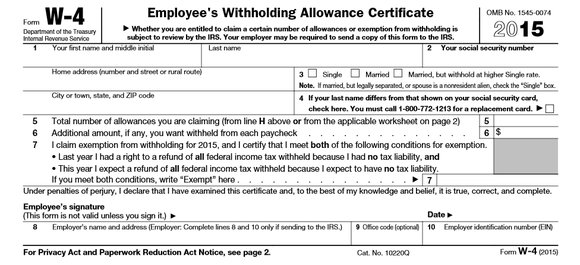

What is Form W-4?
IRS Form W-4 is designed to let your employer know how much should be withheld from your paychecks for Federal income taxes. Most of the information on your W-4 is standard identification information, such as your name, Social Security number, and address -- but the important part is your "allowances" listed on line five

Source: IRS.
Basically, each allowance you claim tells your employer to withhold less money from your paychecks. Fortunately, there's a worksheet provided with your W-4 that can help you determine the correct number of allowances to claim.

Source: IRS.
An accurate number of allowances is important to determine because it can help avoid a tax bill, while simultaneously maximizing your paychecks. If your withholdings are too low, you'll end up owing money to the IRS at the end of the year, which is no fun . On the other hand, if too much is withheld from your paychecks, it's not a good thing either, as we'll see shortly.
Why not just claim zero exemptions and get a big tax refund?
A popular, but misguided, strategy is to claim zero exemptions on a W-4, no matter how many you qualify for. While this will result in a bigger tax refund -- especially if you qualify for multiple allowances -- it's not a good thing.
Click here to download the W-4 Form
How to fill the Form.
- Completing the Personal Allowance Worksheet
Follow the instructions provided by the IRS at the top of the form. A personal allowance reduces your taxable income. The more allowances you claim on your W-4, the less money will be withheld from your paycheck for taxes. In contrast, if you claim fewer allowances, more money will be withheld from your paycheck for taxes.
If you are married with two children and your spouse does not work, you would claim a total of four allowances: one for yourself, one for your spouse, and two for your children.
If you have a working spouse or more than one job, you can enter "0" or leave the line blank if you prefer your taxes to be withheld at the higher single rate.
If your total income for the year will be between $65,000 and $84,000, or between $100,000 and $119,000 if you are married filing jointly, enter a "1" for each qualifying child in the blank for line G
If your total income will be less than $65,000, or less than $100,000 if you are married filing jointly, enter "2" for each qualifying child. Subtract one if you have between two and four qualifying children; subtract two if you have five or more qualifying children. For example, if you have three children, you would enter "5" in the blank for line G: 2 + 2 + 2 - 1 = 5.
Fill out the personal information that is required. In the boxes numbered 1 and 2, you will enter your first and last name, address, and Social Security number.
In box 3, you must check the appropriate square to indicate whether you are single, married, or married but want taxes withheld from your paycheck at the higher single rate.
Sign and date your W-4 form. You've finished filling out the form, but it isn't valid until you sign and date it, declaring under penalty of perjury that all the information you provided is true and complete.